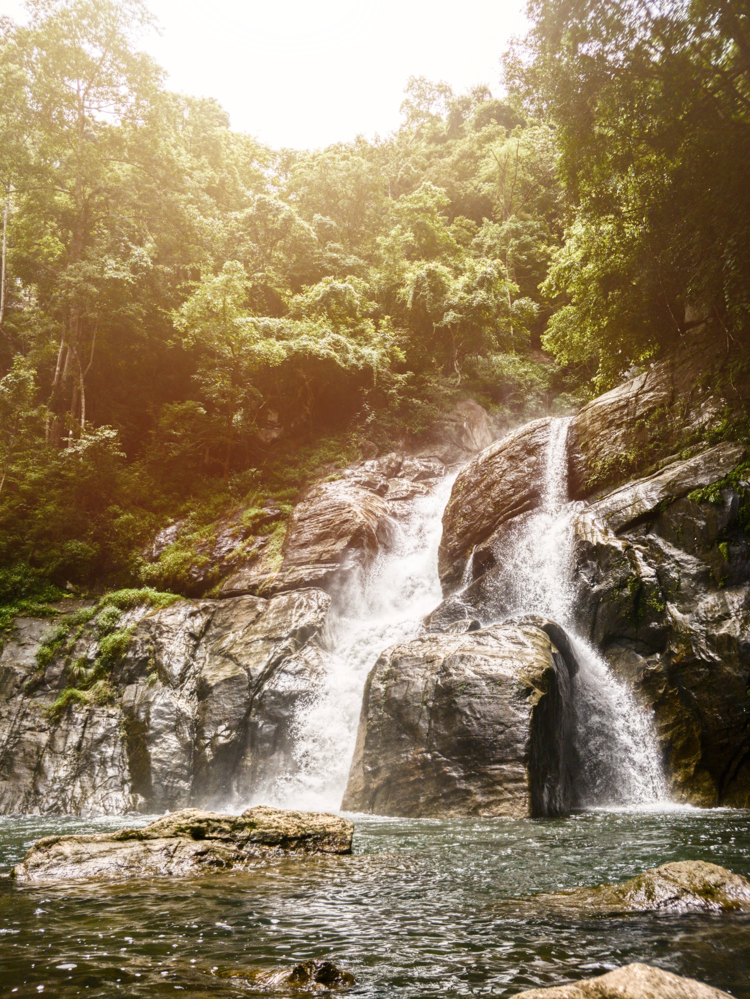
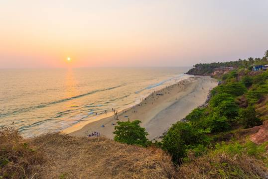
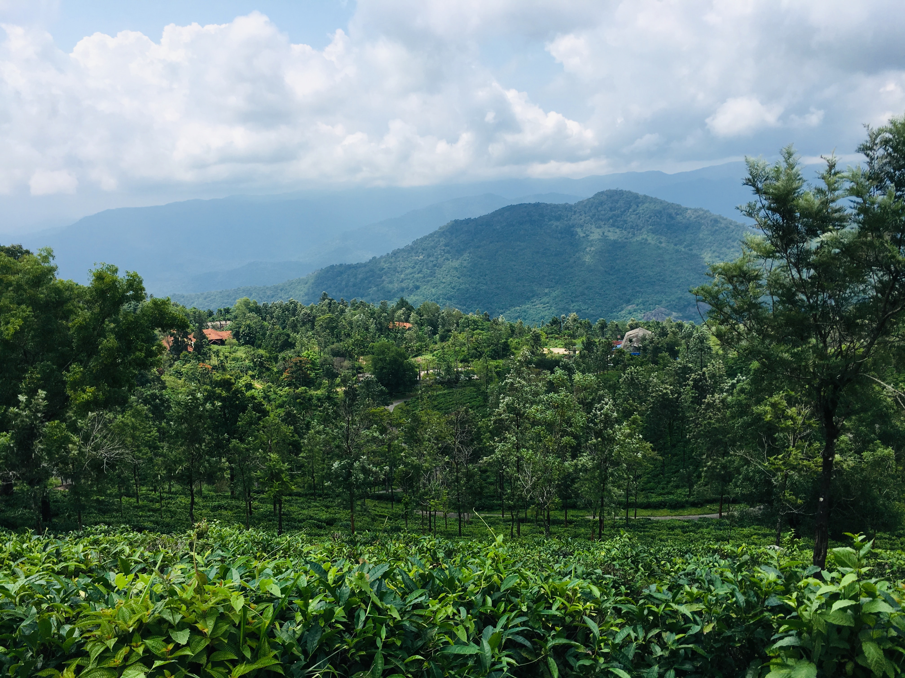

Meenmutty waterfalls
Meenmutty Falls is a waterfall located 45 kilometres from Trivandrum city in Thiruvananthapuram District in the Indian state of Kerala, India

Varkala cliff
Varkala cliff is declared as a geo-heritage site in India due to the unique sediments that laid adjacent to the Arabian sea..

Ponmudi Hill Station
Ponmudi situated 61 km from Thiruvananthapuram city is an enchanting hill station destination famous for its mist covered hills
Previous
Next